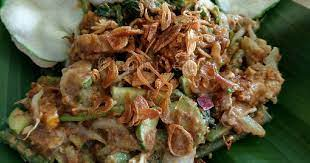

Dendeng

Gado-gado (Indonesian or Betawi) is an Indonesian salad of raw, slightly boiled, blanched or steamed vegetables
and hard-boiled eggs, boiled potato, fried tofu and tempeh, and lontong (rice wrapped in a banana leaf), served
with a peanut sauce dressing.
Ingredients
- 60 grams fried, firm, or smoked tofu, cut into bite-sized chunks
- Kosher salt
- 150 grams baby potatoes, halved
- 100 grams tender-stem broccoli
- 100 grams green beans, trimmed
- Coconut or sunflower oil, for frying
- Flaky sea salt
- 60 grams tempeh, sliced into 3-by-1-centimeter chunks (optional, or replace with more tofu)
- store-bought or homemade kecap kanis (see headnote)
- 2 quantities of peanut sauce (recipe below)
- 1 carrot, peeled and cut into long, thin matchsticks
- 75 grams bean sprouts
- 1/2 cucumber, sliced into thin rounds
- 16 cherry tomatoes, halved
- 4 eggs, hard-boiled for 10 minutes, halved
- 2 tablespoons fried shallots, optional (recipe below)
- Sunflower oil, for frying
- 75 grams unsalted, raw peanuts, preferably with their skin on (or 75 grams unsweetened, unsalted smooth
peanut
butter)
- 2 long red chiles, seeds removed and very finely chopped
- 1 garlic clove, peeled and crushed
- 4 teaspoons kecap manis (see headnote)
- 2 teaspoons tamarind paste (or 2 teaspoons fresh lime juice mixed with 2 teaspoons brown sugar)
- 1 pinch flaky sea salt
- Bawang Merah Goreng (Fried Shallots)
- 500 grams small banana shallots or Thai shallots, peeled and thinly sliced
- Flaky sea salt
- Sunflower oil, for deep-frying
- Rempeyek (Peanut and Makrut Lime Kerupuk)
- 125 grams rice flour
- 75 grams unsalted peanuts, coarsely chopped
- 5 makrut lime leaves, stems removed, very thinly sliced
- Sunflower oil, for frying
- Spice Paste
- 2 garlic cloves, peeled and sliced
- 2 candlenuts or macadamia nuts (or 4 cashews or almonds), toasted for best flavor
- 2 teaspoons ground coriander
- 1 pinch white pepper
Directions
- If the tofu is wet, spread in a single layer on top of several layers of paper towels, then cover with
additional paper towels. Let the tofu sit, pressing down occasionally to squeeze out any excess moisture,
for 15
minutes.
- Bring a pan of salted water to a boil over a high heat and add the potatoes. Simmer for 5 to 8 minutes,
until
tender when pierced with a fork. Drain and let cool.
- Refill the pan with salted water, bring to a boil, and blanch the broccoli and beans for 1 to 2 minutes,
until
bright green, crisp, and just cooked through. Drain and let cool.
- In a wok or large pan over high heat, heat 4 tablespoons of the oil with a large pinch of sea salt. When the
oil
is shimmering, add the tempeh and fry for 3 to 4 minutes, until golden. Drain on a paper towel-lined baking
sheet. Alternatively, if you prefer to grill the tempeh, brush with a mixture of 1 tablespoon each of the
oil
and the kecap manis and grill on high heat for 3 to 4 minutes on each side.
- Loosen the peanut sauce with water until it reaches a pourable consistency. Transfer the peanut sauce to a
pan
and heat over low heat until just warmed through.
- Arrange the potatoes, broccoli, beans, tofu, tempeh, carrot, bean sprouts, cucumber, tomatoes, and eggs on
serving plates or bowls. Sprinkle with the fried shallots and place the crackers on one side of the plate.
Serve
the peanut sauce on the side in a serving bowl or jug or drizzle generously over the top of each plate, as I
like to do. Serve immediately.
- If using raw peanuts, in a deep saucepan over high heat, heat 150 milliliters of the oil to 160°C (325°F).
(If
you do not have an instant-read thermometer, check the oil is at temperature by adding a cube of bread; it
should turn golden in 25 to 30 seconds.) Carefully lower the peanuts into the hot oil with a slotted spoon.
Fry
the peanuts, stirring continuously as the peanuts can easily burn, for 4 to 5 minutes, until golden. Remove
the
peanuts from the pan with a slotted spoon and transfer to a paper towel-lined baking sheet to absorb any
excess
oil.
- In a medium skillet over medium heat, heat 1 tablespoon of the oil. Fry the chiles and garlic, tossing, for
about 4 minutes, until softened.
- Place the fried peanuts or peanut butter in a small food processor with the cooked garlic and chiles, kecap
manis, tamarind paste, and salt. Pulse briefly, then add a splash of water to loosen the sauce and pulse
again.
Gradually add water (about 4 tablespoons) and continue to pulse until the sauce is a pourable consistency.
Season with salt or kecap manis as needed.
- Bawang Merah Goreng (Fried Shallots):
- Toss the sliced shallots with a little salt. Fill a deep saucepan one-third full with oil. Heat the oil to
140°C. (If you don't have a thermometer, check the oil is at temperature by adding a cube of bread; it
should
turn golden in 40 to 45 seconds.) Add the shallots and, stirring occasionally, gently cook for 10 to 12
minutes.
When more than half of the shallots are golden, remove from the heat and let the shallots brown in the
residual
heat. Remove from the oil with a slotted spoon and spread on a paper towel-lined baking sheet. Store in an
airtight container at room temperature.
- Keep the shallot oil in an airtight container, as it is utterly delicious. I like to stir a little through
rice
before serving to give a lovely depth of flavor.
- Rempeyek (Peanut and Makrut Lime Kerupuk):
- Place the spice paste ingredients in a pestle and mortar and grind to a fine paste (alternatively, you could
use
a small food processor, adding a small splash of water to help grind the paste).
- Once the batter has rested, fold in the peanuts and kaffir lime leaves.
- Add enough oil to cover the base of a large deep pan, to the depth of about 1 centimeter. Heat the oil to
175°C.
(If you do not have a thermometer, check the oil is at temperature by adding a cube of bread; it should turn
golden in 20 seconds.) Pour a dessert-spoonful of the batter into the hot oil to make a thin cracker,
roughly 5
centimeters in diameter. Repeat until you have as many crackers as will fit in the pan, but keeping them
apart
so they do not stick together. Fry the crackers until hard at the edges, which will take a few minutes, then
turn them over to brown the other side. Small holes should form inside the cracker. Once a light golden
color
all over, remove from the oil with a slotted spoon and drain on paper towels.
- Store in an airtight container, separating the layers with baking parchment, to keep them crisp.
home